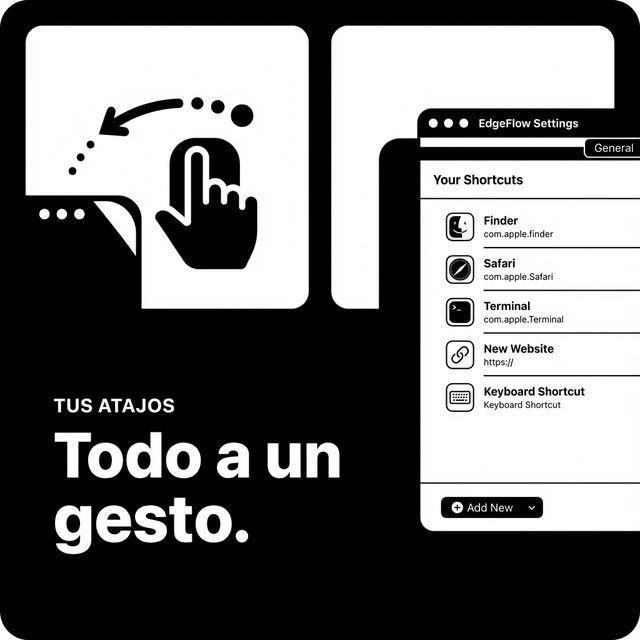

Empuja el ratón
Lleva el cursor al borde de la pantalla. Una franja sensora invisible de solo 4 píxeles lo detecta al instante, sin monitores globales de eventos.
Nativo para macOS · Ya en el Mac App Store
EdgeFlow convierte los bordes de la pantalla de tu Mac en un dock invisible: empuja el ratón y un panel de cristal líquido emerge con tus apps, webs y Atajos de Apple. Un gesto, cero fricción.
Demostración interactiva: acerca el puntero a los bordes laterales de la maqueta. La experiencia real en la app nativa es aún más fluida.
El concepto
Sin iconos permanentes, sin barras flotantes, sin robar un solo píxel de tu escritorio. Tus atajos esperan justo detrás del borde de la pantalla, en el borde izquierdo o derecho que tú elijas.
Lleva el cursor al borde de la pantalla. Una franja sensora invisible de solo 4 píxeles lo detecta al instante, sin monitores globales de eventos.
Un panel de cristal líquido se despliega con animación spring, renderizado en la GPU. El botón más cercano al cursor crece como una gota.
Un clic y la app, la web o el Atajo se ejecuta. Aleja el ratón y el panel desaparece sin dejar rastro. Tu flujo no se interrumpe.
Acciones
Cuatro tipos de acción, un mismo gesto. Cada botón muestra el icono real de la app o el favicon de la web: reconoces lo que vas a abrir antes de hacer clic.
Abre cualquier app de tu Mac al instante. Finder, Safari y Terminal vienen configuradas de serie; añade las tuyas en segundos.
Lanza tus webs de siempre en el navegador por defecto. Cada botón luce el favicon del sitio, recortado en círculo.
EdgeFlow lee tu biblioteca de Atajos y ejecuta cualquiera con un clic en el borde. Automatización real, sin teclado.
Un botón fijo al final del panel te lleva a la configuración. Añade, edita y reordena sin buscar nada por los menús.
Personalización
No al revés. Una ventana de ajustes clara, con todo lo importante a un clic desde la barra de menús.
Configura EdgeFlow exactamente como lo quieres usar, pantalla a pantalla.

La pestaña Botones es tu centro de mando: una lista limpia con el icono real de cada acción.

Capturas reales de la app. Interfaz disponible en español, inglés y chino simplificado, con cambio de idioma integrado.
A fondo
Actívalo en todas tus pantallas o solo en las que quieras. En bordes compartidos entre monitores, una pausa breve de 0,3 s evita aperturas accidentales al cruzar el cursor. Los sensores se reconstruyen solos al conectar o desconectar pantallas.

El panel te sigue a cualquier Espacio de macOS, incluso sobre apps a pantalla completa.
Nombres flotantes al pasar el cursor. Actívalas mientras aprendes, escóndelas cuando ya no las necesites.
Organiza tus atajos arrastrando filas en los ajustes. El orden del panel es exactamente el tuyo.
Ábrelo al iniciar sesión y olvídate: siempre estará a un gesto, sin icono en el Dock.
Una guía visual en el primer arranque te enseña el gesto en segundos. Repítela cuando quieras desde Ajustes.
Disponible en español, inglés y chino simplificado, con selector de idioma dentro de la propia app.
Rendimiento
Nada de Electron: SwiftUI y AppKit puros, renderizado en GPU y animaciones spring nativas. El sensor solo trabaja mientras el panel está activo.
Sin analíticas, sin servidores propios y sin permisos especiales: EdgeFlow no necesita Accesibilidad ni Monitorización de Entrada. Funciona dentro del sandbox de la App Store y todo ocurre en tu Mac; solo se descargan de internet los favicons de tus atajos web.
Experiencia real
Grabación real de EdgeFlow en macOS. Sin retoques, sin maquetas: así fluye en tu escritorio.
FAQ
Lleva el cursor al borde configurado (izquierdo o derecho) y empuja suavemente. El sensor mide solo 4 píxeles: no estorba ni interfiere con tus ventanas. El panel se repliega solo al alejar el ratón.
Aplicaciones de tu Mac, webs y URLs, Atajos de Apple (la app Atajos) y un acceso directo a los ajustes de EdgeFlow. Cada botón muestra el icono real de la app o el favicon de la web.
Sí. Actívalo en todas tus pantallas o solo en las que elijas. En los bordes compartidos entre monitores hay un retardo de 0,3 s que evita aperturas accidentales al cruzar el cursor. También funciona en todos los Espacios y sobre apps a pantalla completa.
No. En reposo no hay ningún temporizador activo: 0 % de CPU y menos de 35 MB de RAM. Está programado en Swift nativo y diseñado para desaparecer.
No. EdgeFlow no pide Accesibilidad ni Monitorización de Entrada: usa áreas de seguimiento propias de macOS y funciona íntegramente dentro del sandbox de la App Store.
EdgeFlow requiere macOS 13 Ventura o superior y funciona en Macs con Intel y Apple Silicon. La interfaz está disponible en español, inglés y chino simplificado.
La familia
Tres utilidades nativas para macOS, creadas por un desarrollador independiente con la misma obsesión: que se sientan de fábrica.

Descarga EdgeFlow en el Mac App Store y convierte los bordes de tu pantalla en tu herramienta más rápida.
macOS 13 Ventura o superior · Intel y Apple Silicon · Compra única, sin suscripciones